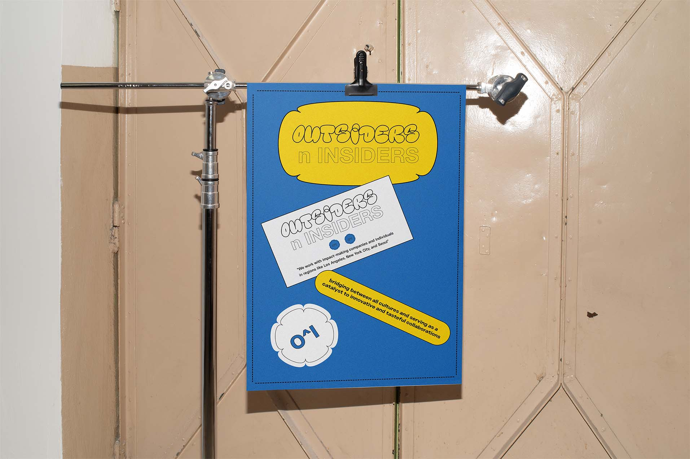
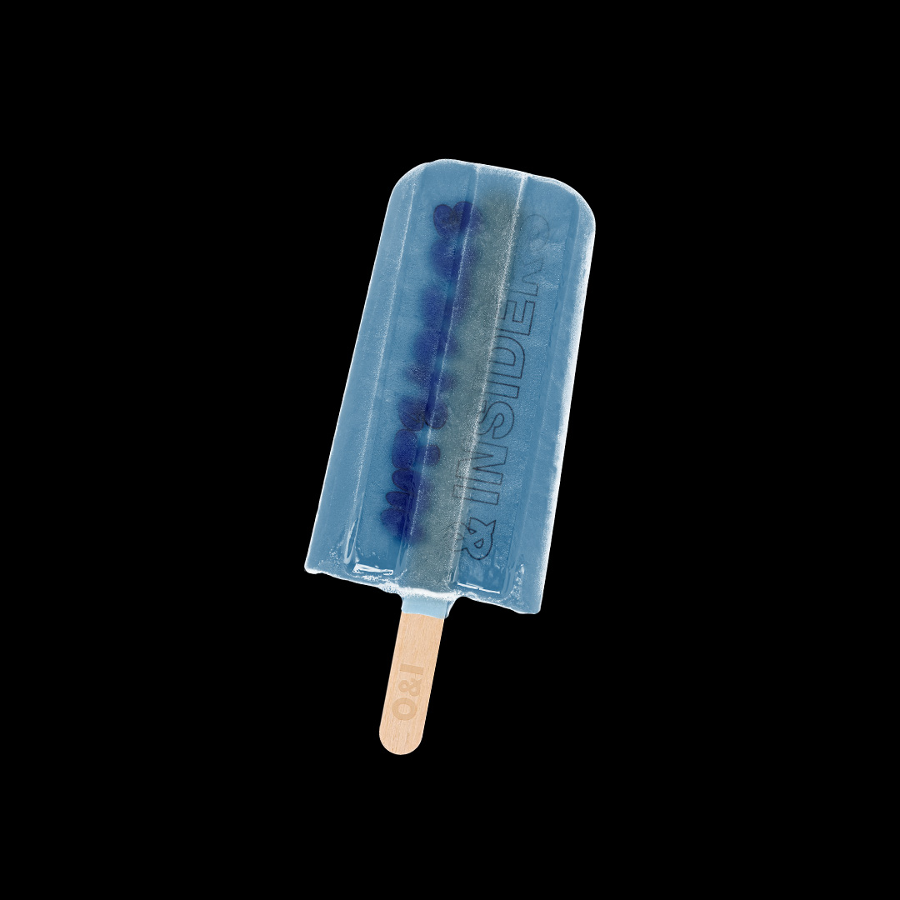
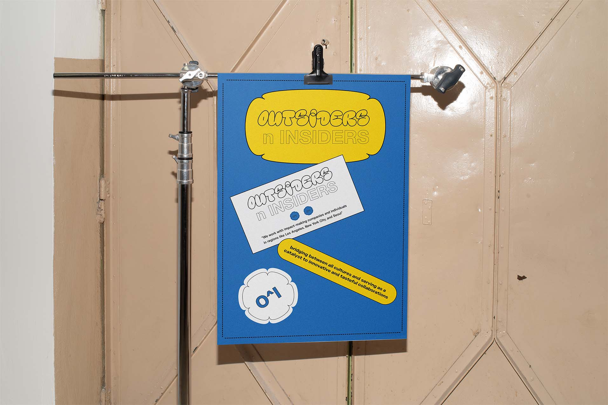
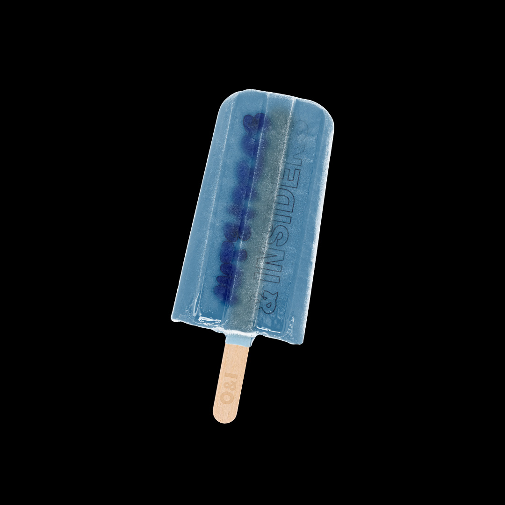

back
Outsiders & Insiders
In fall 2023, I teamed up with Jun, the founder of Outsiders & Insiders, to design their website and build their online presence.
The mockups below were created to give the website a clear and consistent look that matches the brand's style.
 


